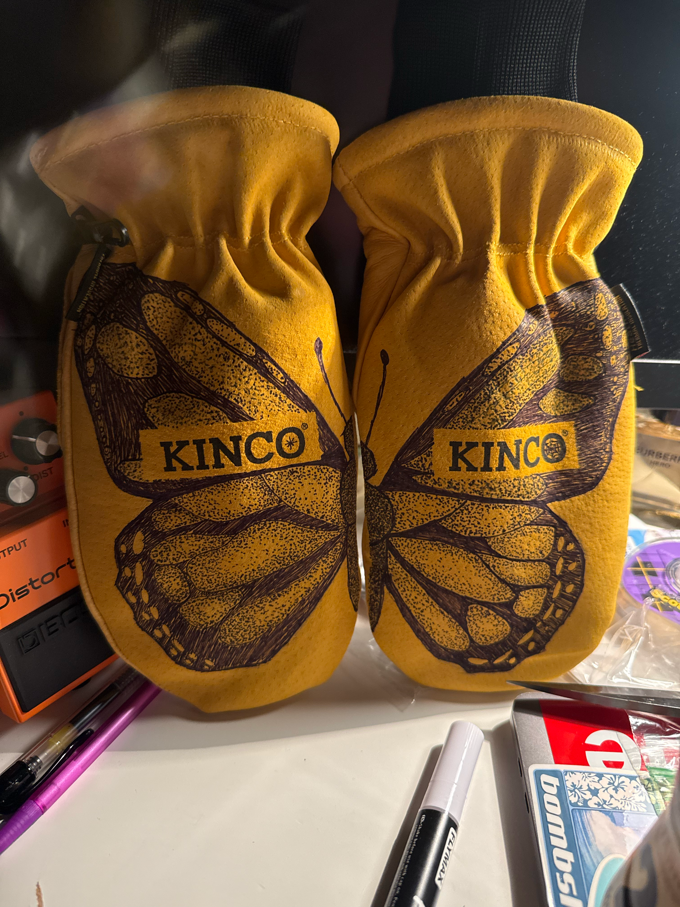

My Skiing Career
How I started
I started skiing when I was 7 years old when my dad finally decided it was time for me and my sister to start. When skiing with my dad and sister, I was always the type of kid to go on solo adventures and get myself lost. This also led to me being put on a ski leash.
How It's Going
It's going great! Ever since I started taking skiing decently serious, I started progressing a lot more. In this season alone with the 22 days ( as of Febuary 10), i have learned how to cleanly backflip, grind pipes and 360.
Where I ski
I ski at Brighton and Snowbird but I have skied at Deer Valley, Park City, Solitude and Pine Creek.
Skills I Want To Learn
- Rails
- 270 outs
- Swaps
- 540
- Frontflip
These skills I do want to learn but I understant this isn't going to just happen this season due to the lack of snow and having to learn more of the base tricks.
Current Progression
Currently, I am focusing hard on rails, swaps, and 270 outs. I have had 3 progresssion days out of my 22 so far. Progression days is where you go alone or with a SMALL group to focus on one certain skill and try to become consistent with it